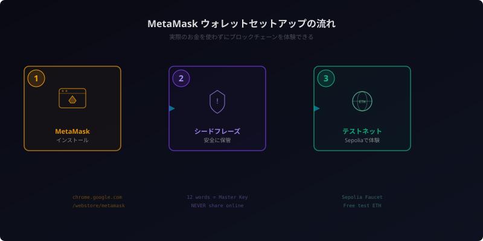

仮想通貨はこう動いている ― 仕組み・種類・ウォレットを一気に学ぶ

「仮想通貨、興味はあるけど何から学べばいいかわからない」——そんな方のために、基本の仕組みから種類、実際にウォレットを触るところまで一つずつ案内していきます。Boltと一緒に、最新の動向も交えながら進めましょう。
そもそも仮想通貨って何？ ― お金との違い
まず、最もシンプルな定義から。
仮想通貨（暗号資産）とは、「国や銀行が発行しない、インターネット上のデジタルなお金」だ。
普段使っている「円」や「ドル」は、日本銀行やアメリカの連邦準備制度が発行している。こうした通貨を法定通貨（フィアット）と呼ぶ。法定通貨の価値は、発行する国の信用に支えられている。
一方、ビットコインをはじめとする仮想通貨には発行主体がない。代わりに、ブロックチェーンという技術と、参加者全員の合意によって成り立っている。ブロックチェーンとは簡単に言えば「みんなで同じ台帳を持ち合い、改ざんを不可能にする仕組み」だ。この記事ではブロックチェーン自体の詳しい解説は省くが、技術の中身が気になる方は以下の記事で図解つきで学べる。
通貨の3条件で比較する
経済学では、「通貨」として機能するために3つの条件が必要とされる。
| 条件 | 法定通貨（円） | 仮想通貨（BTC） |
|---|---|---|
| 交換手段 | どこでも使える | 使える場所は限定的 |
| 価値の保存 | 安定（インフレはある） | 価格変動が激しい |
| 価値の尺度 | 「この商品は1,000円」 | BTC建て価格は少ない |
正直なところ、現状の仮想通貨は法定通貨と同じ「通貨」としての完全な機能は果たせていない。だが、それでも仮想通貨が世界中で注目されている理由がある。
ビットコインはなぜ生まれたのか
2008年、世界金融危機（リーマンショック）が起きた。銀行が次々と破綻し、各国政府は巨額の税金で銀行を救済した。「自分のお金を預けている銀行が、自分の知らないところでリスクを取って破綻する」——この現実に多くの人が疑問を持った。
その直後、サトシ・ナカモトと名乗る匿名の人物（またはグループ）が、「Bitcoin: A Peer-to-Peer Electronic Cash System」という論文を公開した。銀行のような仲介者なしに、個人間で直接お金を送り合える仕組み——それがビットコインの始まりだ。
なんのために存在するの？ ― 3つの「なぜ」
「仕組みはわかったけど、結局なんのためにあるの？」という疑問に、3つの視点から答える。
なぜ1: 銀行なしで送金できる
海外にお金を送るとき、銀行を経由すると手数料は数千円、着金まで数日かかる。仮想通貨なら、相手のウォレットアドレスに直接送るだけ。手数料は数十円〜数百円程度、着金は数分〜数十分だ。
特に出稼ぎ労働者が母国に送金するケースでは、銀行手数料が送金額の10%を超えることもある。仮想通貨はこの問題を大幅に改善できる。
なぜ2: 国境を超える共通の「お金」
円をドルに両替するには為替手数料がかかる。通貨の種類は世界に180以上ある。仮想通貨は国に紐づかないため、どこにいても同じビットコインが使える。「世界共通の通貨」という可能性を持っている。
なぜ3: 自分のお金を自分で管理する（Be Your Own Bank）
銀行にお金を預けると、法的にはそのお金は「銀行のもの」になる（預金者は債権者になるだけ）。銀行が口座を凍結すれば、自分のお金にアクセスできなくなる。
仮想通貨のウォレットは違う。秘密鍵を持っている人だけがアクセスできる。誰にも凍結されない、検閲されない、差し押さえられない。「自分の銀行を自分で持つ」——これが仮想通貨のコア思想だ。
世界では約14億人が銀行口座を持てていない（World Bank, 2021）。スマホとインターネットさえあれば金融サービスにアクセスできる仮想通貨は、途上国の金融包摂（ファイナンシャル・インクルージョン）の切り札として期待されている。
「自分のお金を自分で管理する」って、当たり前のことのように聞こえますよね。でも実際には、銀行口座を持てない人、政府に資産を凍結される人、紛争で国外に逃げざるを得ない人にとって、これは生死に関わる話なんです。仮想通貨の意義は、投資や投機だけでは測れません。
投資だけじゃない ― 仮想通貨の多様な使い道
仮想通貨は「投資対象」としての側面が注目されがちだが、実際にはそれ以外にも多様なユースケースがある。技術として何ができるのかを見ていこう。
決済手段
エルサルバドルはビットコインを法定通貨に採用した（2021年〜）。日本でもビックカメラやメルカリでビットコイン決済が可能だ。
送金
先述のとおり、国際送金のコストと速度を大幅に改善する。海外のフリーランスへの支払いにも使われている。
DeFi（分散型金融）
銀行を介さずに、貸し借り・両替・保険などの金融サービスをブロックチェーン上で実現する。24時間365日、誰でもアクセスできる。
NFT（非代替性トークン）
デジタルアートやゲームアイテムの「所有証明書」をブロックチェーンに記録する。クリエイターが仲介者なしにファンに直接作品を販売できる仕組みとしても注目された。
DAO（分散型自律組織）
仮想通貨のトークンを持つメンバーが、投票によって組織の意思決定を行う。従来の株式会社とは異なる、新しい組織の形だ。
ブロックチェーンゲーム
ゲーム内アイテムがNFTとして所有でき、他のプレイヤーに売買できる。「Play to Earn（遊んで稼ぐ）」というコンセプトで一時期大きな話題になった。
なぜ価格が上がったり下がったりするのか
仮想通貨の価格は、株式と同じく需要と供給で決まる。「買いたい人が多ければ上がり、売りたい人が多ければ下がる」。ただし、株式と違って企業の業績に裏打ちされていないため、価格変動が極めて激しい（ボラティリティが高い）。著名人の発言1つで10%以上動くこともある。

投資以外の活用事例として注目すべきは、ステーブルコインを使った国際決済だ。VisaやMastercardがステーブルコイン決済の対応を進めており、従来の銀行送金を代替する動きが加速している。「仮想通貨＝投機」というイメージは、今後数年で大きく変わる可能性がある。
仮想通貨の種類を知ろう ― ビットコインだけじゃない
仮想通貨は数万種類存在するが、まず押さえるべきは4つのカテゴリだ。
ビットコイン（BTC）― デジタルゴールド
仮想通貨の元祖。発行上限が2,100万枚と決まっている。「有限である」という性質から、金（ゴールド）と同じく価値の保存手段として位置づけられることが多い。時価総額は仮想通貨全体の約半分を占める。
イーサリアム（ETH）― プログラムが動くプラットフォーム
ビットコインが「デジタルなお金」なら、イーサリアムは「プログラムを動かせるコンピュータ」だ。スマートコントラクトと呼ばれるプログラムをブロックチェーン上で実行でき、DeFi、NFT、DAOなどのアプリケーション（DApps）の基盤になっている。
ステーブルコイン（USDT / USDC）― 価格安定型
ドルや円などの法定通貨に価値を連動（ペッグ）させた仮想通貨。1 USDT ≒ 1ドルで価格が安定するため、決済や送金の実用に向いている。仮想通貨市場の「共通語」的な存在だ。
アルトコイン / ミームコイン ― 玉石混淆
BTC・ETH以外の仮想通貨を総称して「アルトコイン」と呼ぶ。中には技術的に優れたプロジェクトもあるが、「草コイン」「ミームコイン」と呼ばれる実態のないコインも大量に存在する。「100倍になる」という宣伝に乗って購入すると、価値がゼロになるリスクがある。
最初はBTCとETHの2つだけ覚えれば十分です。この2つを理解していれば、他の仮想通貨の話を聞いても「あ、ビットコインのこういう部分を改良しようとしてるんだな」とか「イーサリアムのスマートコントラクトを使ってるんだな」と見通しが立ちます。いきなり何千種類も知ろうとしなくて大丈夫ですよ。
ウォレットを触ってみよう ― MetaMaskで「持つ」体験
ここまで読んで「なんとなくわかった」という人は多いと思う。だが、理解を一段深めるには実際に触ってみるのが一番だ。ここでは、実際のお金を使わずにウォレットを体験する方法を紹介する。
ウォレットとは？
ウォレット（wallet = 財布）は、仮想通貨を管理するためのツールだ。ただし、銀行口座との大きな違いがある。
| 銀行口座 | ウォレット | |
|---|---|---|
| 管理者 | 銀行 | 自分自身 |
| パスワード忘れ | 銀行に連絡すれば復旧可能 | 秘密鍵を失うと永久にアクセス不可 |
| 凍結 | 銀行や政府が凍結できる | 誰にも凍結できない |
| 利用時間 | 営業時間内 | 24時間365日 |
MetaMaskを入れてみよう
MetaMask（メタマスク）は、最も広く使われている仮想通貨ウォレットの1つだ。ブラウザの拡張機能として動作する。

ステップ1: インストール
- Chromeウェブストアで「MetaMask」を検索
- 公式の拡張機能（MetaMask提供）をインストール
- 「新しいウォレットを作成」を選択し、パスワードを設定
ステップ2: シークレットリカバリーフレーズの保管
ウォレット作成時に12個の英単語（シークレットリカバリーフレーズ / シードフレーズ）が表示される。これは「ウォレットのマスターキー」だ。
- 紙に書いて、オフラインで保管する（スクリーンショットやクラウドメモはNG）
- このフレーズを知っている人は、どこからでもあなたのウォレットにアクセスできる
- 絶対にSNSやメールで共有しない。「サポートを名乗ってフレーズを聞いてくる」のは100%詐欺
ステップ3: テストネット（Sepolia）でETHを入手
実際のお金を使わずに体験するため、テストネットを使う。テストネットとは、本番のブロックチェーンと同じ仕組みで動くが、使われるETHに金銭的価値がないネットワークだ。
- MetaMaskの設定で「テストネットワークを表示」を有効にする
- ネットワークを「Sepolia テストネット」に切り替える
- Google検索で「Sepolia faucet」と検索し、テスト用ETHを無料で受け取る（faucet = 蛇口。テスト用通貨を配布するサービス）
- 自分のウォレットアドレスを入力して「送信」を押すと、数秒〜数分でテスト用ETHが届く
これで「ウォレットに仮想通貨が入っている」状態を体験できる。もう1つウォレットアドレスを作成すれば、テスト用ETHを自分自身に送金する練習もできる。実際のお金を使わずに、ブロックチェーンの「送る・受け取る」を体感してほしい。
ウォレットセキュリティの観点で補足しておく。2024〜2025年にかけて、偽のMetaMask拡張機能による被害が急増した。必ず公式サイト（metamask.io）からインストールすること。また、ハードウェアウォレット（Ledger、Trezorなど）を使えば秘密鍵をオフラインで管理でき、セキュリティが大幅に向上する。まとまった金額を扱う場合は検討してほしい。
押さえておきたい ― 仮想通貨の5つのリスク
仮想通貨を学ぶ上で、リスクの理解は欠かせない。ここでは知っておくべき5つのリスクと対策を整理する。
リスク1: 価格変動リスク
ビットコインは過去に1日で20%以上下落したことがある。「余剰資金の範囲内で」が鉄則。生活費や借金で仮想通貨を買うのは絶対にやめよう。
リスク2: 詐欺・フィッシング
「必ず儲かる」「元本保証」「限定公開の新コイン」——これらはほぼ100%詐欺だ。SNSでの勧誘、偽サイトへの誘導、偽ウォレットアプリに注意。公式サイトのURLをブックマークし、必ずそこからアクセスする習慣をつけよう。
リスク3: 秘密鍵（シードフレーズ）の紛失
銀行と違い、秘密鍵を失うと誰にも復旧できない。実際に、パスワードを忘れて数億円相当のビットコインにアクセスできなくなった事例は複数報告されている。シードフレーズは複数箇所にバックアップし、耐火金庫などに保管するのが理想だ。
リスク4: 規制リスク
各国政府の規制は流動的だ。中国は2021年に仮想通貨取引を全面禁止した。日本では現時点で合法だが、規制が強化される可能性はゼロではない。規制変更で取引所が閉鎖されたり、特定の通貨が取り扱い停止になるリスクがある。
リスク5: 税金
日本では仮想通貨の利益は「雑所得」に分類される。これは給与所得と合算されて累進課税が適用されるため、最大で住民税と合わせて約55%が課税される。株式の分離課税（約20%）と比べて圧倒的に高い。利益が出たら確定申告が必要になることも覚えておこう。
リスクは「怖いから避ける」ものではなく、「理解して備える」もの。知っていれば防げるリスクがほとんどです。「シードフレーズを他人に教えない」「偽サイトにアクセスしない」「余剰資金でしか買わない」——この3つの基本を押さえるだけで、主要なリスクの大半はカバーできます。
まとめ ― ここから先の学び方
この記事では、仮想通貨の全体像を「知る→体験する→深掘りする」の3ステップで整理した。
- 知る ― 仮想通貨は「国が発行しないデジタルなお金」。送金、DeFi、NFTなど投資以外にも多様なユースケースがある
- 体験する ― MetaMaskとテストネットを使えば、実際のお金を使わずにウォレットの操作感を体験できる
- 深掘りする ― ブロックチェーンの技術的な仕組み、スマートコントラクト、DeFiのプロトコルなど、興味のある領域から深めていく
仮想通貨の裏側にある「ブロックチェーン」の技術的な仕組みをもっと深く知りたい方は、以下の記事もどうぞ。
仕組みを知ると、ニュースの見え方がまるで変わります。「なぜこの通貨が注目されているのか」「この技術は何を解決しようとしているのか」が自分で読み解けるようになる。この記事がその第一歩になれたら嬉しいです。
仮想通貨の世界は変化が速い。規制、技術、市場環境——すべてが半年で様変わりする。だからこそ、「仕組みを理解する力」が最強の武器になる。流行りの銘柄を追うのではなく、根底にある技術と思想を押さえておけば、どんな変化にも対応できる。
2008年10月31日にサトシ・ナカモトが論文を発表、2009年1月3日に最初のブロック（ジェネシスブロック）が生成された。そのブロックには「The Times 03/Jan/2009 Chancellor on brink of second bailout for banks（銀行への2度目の救済が迫る）」というイギリスの新聞見出しが埋め込まれている。金融システムへの問題提起が、ビットコインの出発点だったことがわかる。